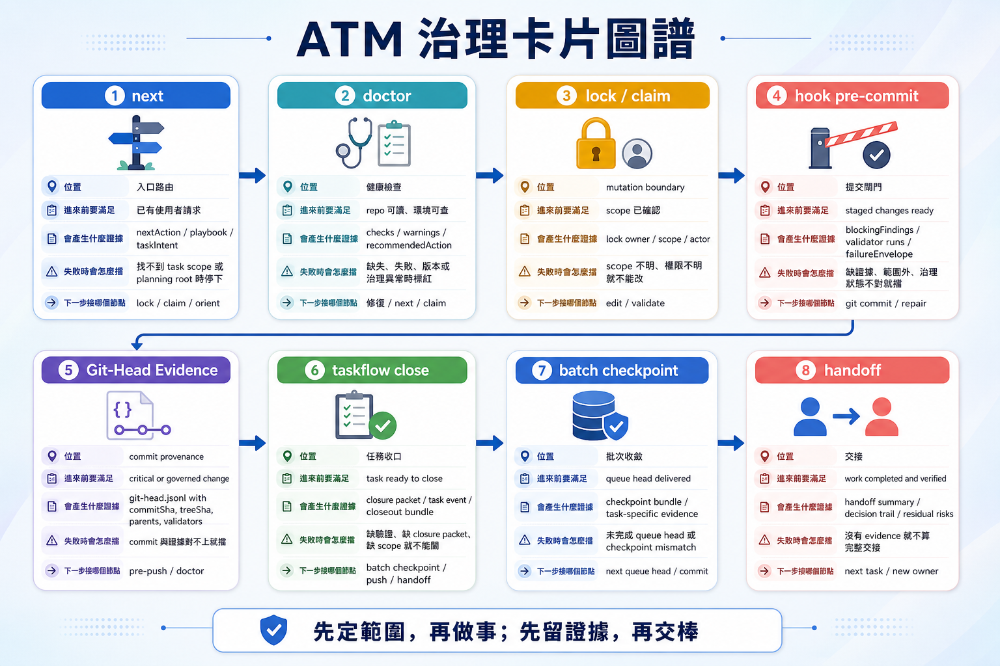
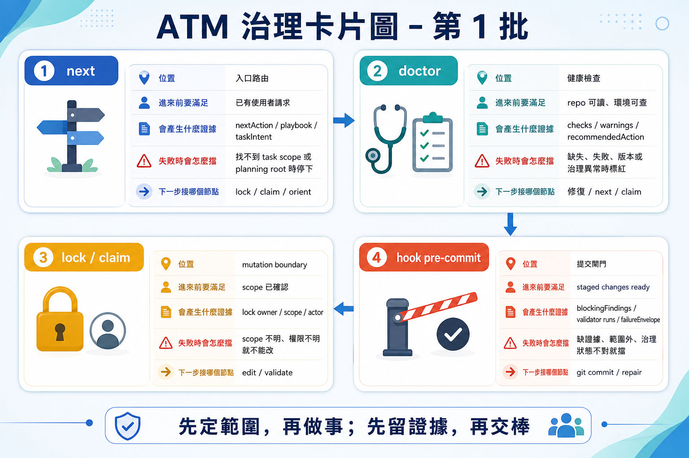
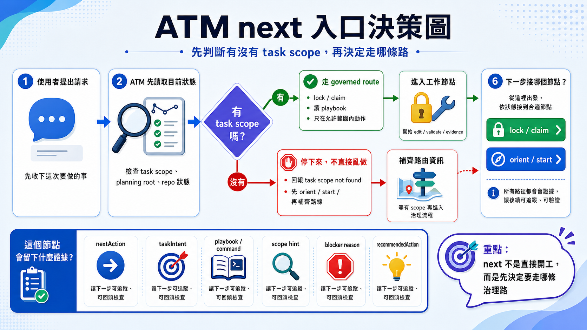
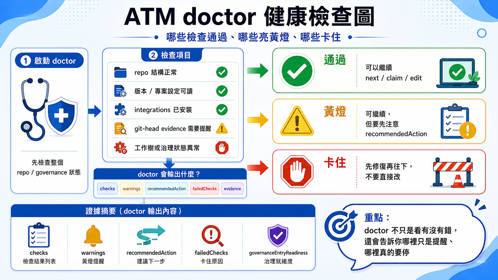
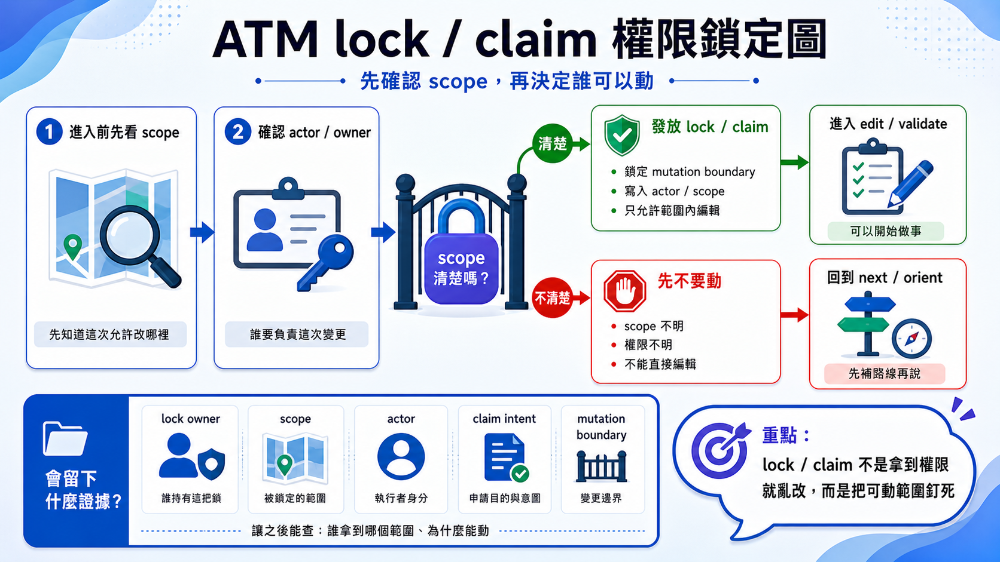
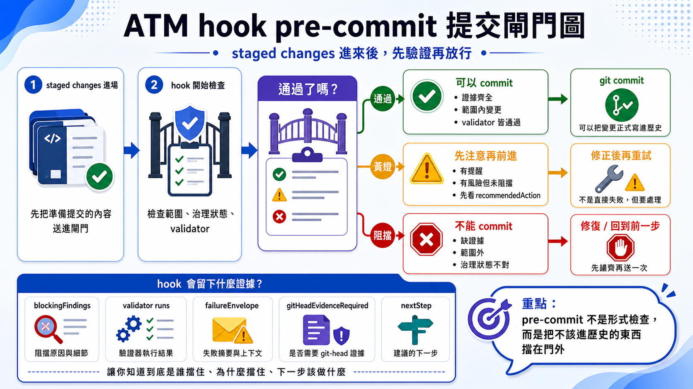
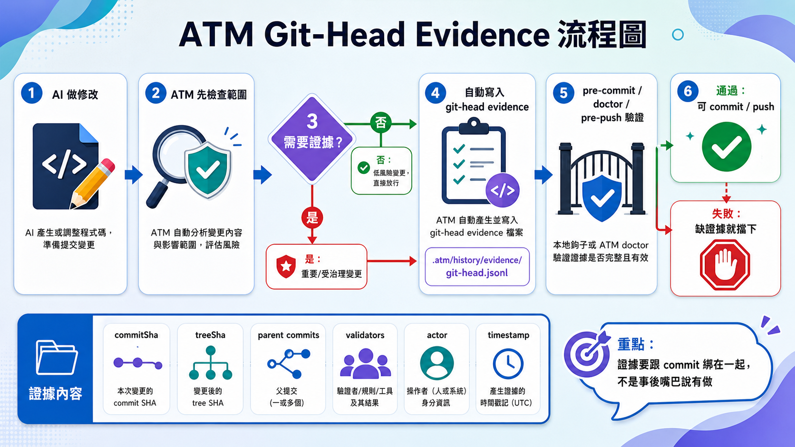
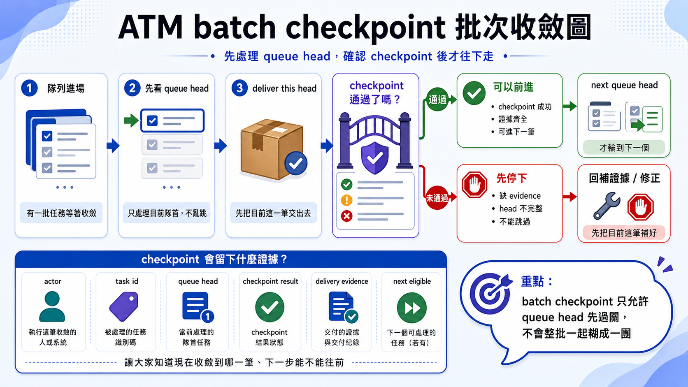

ATM Governance · Visual Guide
Understanding ATM Governance for AI Agents in Eight Diagrams
Once AI becomes a team of agents changing the same repository, the hard question is no longer only "can it write code?" It becomes: can it deliver stable, verifiable, recoverable engineering work?
ATM is not about making humans memorize more commands. It is about letting an AI agent enter a repository, learn the local ATM skill, understand task intent, obtain a boundary, validate the result, leave evidence, and hand the work to the next human or agent. These eight diagrams form a map of that governance chain: entry routing, health checks, locks, hooks, git-head evidence, closeout, and batch checkpointing.
The short version: ATM governs AI engineering behavior
Most AI coding discussions focus on model capability: which model is smarter, which prompt is sharper, which agent can touch more files. Long-running projects change the shape of the problem. You start asking different questions: did the agent understand the task boundary? Did it claim the right scope? Did validation run? If something fails, can we locate the cause? Can the next agent continue without reconstructing chat history?
For humans
You describe the outcome, such as "fix a small login validation bug and leave reviewable evidence." The intended first touch is the AI using the local ATM skill, not the human learning the CLI first.
For agents
An agent should not edit immediately. It should read the local entry guidance, route through ATM next, then follow the returned playbook, scope, and validator expectations.
1. Start with the map: ATM Governance Atlas
Figure 02
ATM governance atlas

If you remember only one thing, remember this: ATM does not try to replace Git, CI, or human review. It sits between AI agents and the repository. An agent wants to act, so it routes first. It wants to edit, so it needs scope. It wants to close, so it needs evidence. It wants to cooperate, so it needs to know which work can happen in parallel.
2. Governance cards batch 1: put the high-frequency surfaces on one board
Figure 03
governance cards batch 1

next, doctor, lock / claim, and hook side by side so a human or agent can quickly see which governance card should open first.For a first-time reader, the full atlas can be too broad while a single flowchart can be too narrow. This card board sits in the middle. It behaves like a governance dashboard home screen and tells you that the most common problem is not "which command exists?" but "which governance surface is relevant right now?"
For example, suppose the request is "fix the landing page and check whether GitHub also needs the same update." A mature agent should not edit immediately. It should first decide whether to route through next, whether the repo needs a doctor pass, whether the scope needs a lock, and what the hook will later enforce. This board puts those four questions in one place.
3. next is the entry: decide how this request should move
Figure 04
next entry decision

next is the agent's first governance entry. It does not merely answer "what is next?" It converts the user's request into a route, playbook, risk signal, and prerequisites.In a CLI-first world, humans must remember the correct command order. In a skill-first ATM workflow, the agent should absorb that habit. The human states the outcome, the agent enters next through the repo-local skill, and the returned playbook keeps it from inventing its own lifecycle.
Take a request like "update the paper landing page and see whether GitHub needs matching changes." next should not return only "start editing." It should separate the work into website copy, repo documentation, and possibly publishing follow-up, then indicate which repository should be touched first. That is how the agent avoids treating a cross-repo job like a trivial single-page edit.
4. doctor is the health check: can this repo safely accept work?
Figure 05
doctor health check

doctor asks whether the repository is ready for governed agent work. Entry files, integrations, runner state, evidence, policy, and Git state can all become early warning signals.The most expensive AI failures are the ones discovered late. Doctor pushes those failures earlier. Before the agent mutates files, it can learn whether the repository is healthy enough to proceed. For a multi-agent team, this is the traffic system before the intersection.
A concrete example is a missing repo-local ATM integration, a stale runner build, or a dirty Git tree that already contains someone else's uncommitted work. Those should not wait until pre-commit. Doctor tells the agent whether it must repair entry files, rebuild the runner, or resolve tree state before governed work really begins.
5. lock / claim is the boundary: shrink the agent to the task
Figure 06
lock and claim boundary

Without a boundary, an agent can easily turn a small fix into a broad cleanup or a bug fix into a speculative refactor. ATM first places the work inside a bounded frame so mutation, validation, and evidence all describe the same thing.
Imagine you asked for a rewrite of [README.md](C:/Users/User/AI-Atomic-Framework/README.md) to improve the 60-second beginner entry. A drifting agent may casually rewrite CLI docs, package metadata, and side documents along the way. Lock / claim says: not this time. This task touches the README and the paired publishing surface, not the whole framework.
6. hooks are live gates: block invalid work before commit
Figure 07
hook pre-commit gate

This is where ATM becomes practical engineering rather than advice. It does not depend on agents remembering every rule. It embeds the rule at the moment where the repository is about to change.
For instance, the page may already look finished, but the staged set still includes an out-of-scope file, a missing validator, or evidence that no longer matches the working tree. Without hooks, the agent is tempted to report success. With hooks, the repository can answer back: no, this delivery is not yet governable.
7. git-head evidence: prove which tree the evidence describes
Figure 01
git-head evidence flowchart

Evidence freshness is easy to overlook. A test that passed yesterday does not prove today's tree. By binding evidence back to Git head, ATM makes every closeout answer the same question: exactly which code did this evidence validate?
Picture agent A running validation in the morning, then editing two more files in the afternoon while still carrying the old "passed" result. Without git-head evidence, stale proof can quietly leak into a new delivery. Once evidence is tied to HEAD, the system can ask the right question: does this proof belong to this exact tree? If not, rerun it.
8. batch checkpoint: large queues move one stable head at a time
Figure 08
batch checkpoint flowchart

Parallel work still needs rhythm. Batch checkpointing gives large work a cadence and reduces the classic failure mode: many things changed, but nobody knows which unit is actually done.
Suppose you are revising multiple articles, rewriting the README, and syncing a landing page at the same time. If all of that lands as one giant commit, it becomes hard to answer which unit is actually stable. Batch checkpointing says: finish the queue head, leave evidence, make it handoff-safe, then advance. It is slower, but much safer for a multi-agent team.
Put the eight diagrams back into one governance view
- Atlas: the governance atlas gives the global coordinate system.
- Board: cards batch 1 groups the high-frequency governance cards into one dashboard.
- Route:
nexttranslates natural language into a governed path. - Inspect:
doctorchecks runner, integration, policy, evidence, and Git readiness. - Bound: lock / claim gives the agent a declared scope.
- Gate: hooks block invalid state before commit.
- Bind proof: git-head evidence proves which code the validation describes.
- Advance deliberately: batch checkpoint keeps multi-task work resumable.
If you are looking for taskflow close, it is still important; it just is not included as a standalone visual in this particular eight-image pack. In the real engineering chain, it sits after git-head evidence and turns delivery plus evidence into closure before the next checkpoint or handoff.
This is how ATM governs AI: it does not assume the model is always right or the prompt is always perfect. It places agent work inside a bounded, validated, recoverable chain. That is the foundation that lets multi-agent collaboration become an engineering practice rather than a pile of impressive but fragile edits.